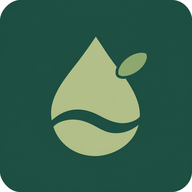

OBSERVE · UNDERSTAND · RESTORE물속의 균형을
물속의 균형을
되찾는 시간.
세 수역에서 만나는 10분 생태 탐험
8.1mg/L양호
20.0°C봄 수온
24/100낮음
남해안 · 연안 양식장와편모조류 관찰 중
실시간 3D 생태계증식 지수 7%

에코워터 3DAQUATIC ECOSYSTEM LAB세 수역에서 만나는 10분 생태 탐험
WebGL을 지원하는 Safari 또는 Chrome에서 다시 열어주세요.